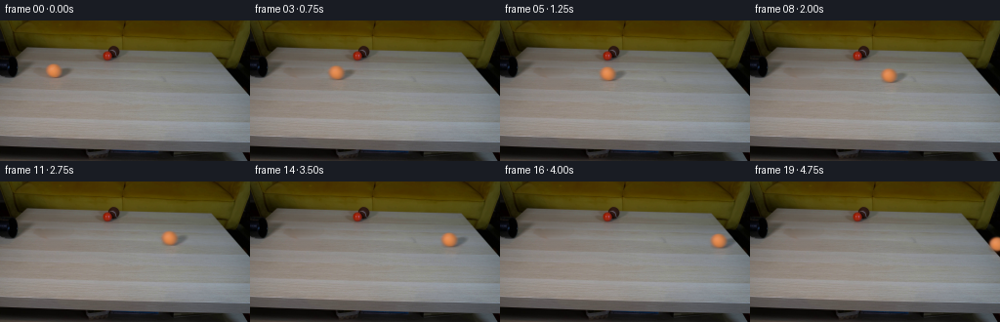
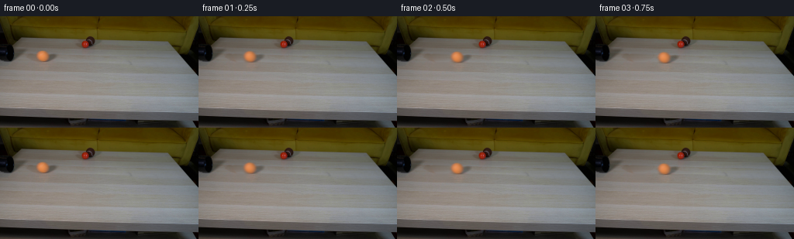

← 本轮 smoke 总览traex/GPT-6-Astra · 0011
text · 256×144 · 4.0 FPS · 20 帧 · 状态 complete · 输出 tokens 16151
原始任务Static locked-off single-shot with fixed frame throughout filmed with constant framerate in real-time. The scene shows a realistic scientific demonstration. The scene only contains the described setup and actions. A light-colored wooden coffee table with a few small objects on it, including a brown tennis ball and a smaller red ball. The orange tennis ball rolls straight out of the black pipe over the entire table towards the right side.
当前保存结果
已保存候选与代码修改
这里按时间展示外部捕获的候选，每份均可单独播放。保存新版本不等于完成视觉检查；下方工具证据记录实际看过的图。
候选 01 · 2026-11-08T22:16:18.285520+00:00 · 点开播放与检查图
inspection.png

transition_check.png

代码变化
--- 上一保存版本
+++ 本次保存版本
@@ -0,0 +1,108 @@
+from pathlib import Path
+import numpy as np
+from PIL import Image
+import cv2
+from scipy.ndimage import gaussian_filter, map_coordinates
+import artifact_io
+
+ROOT = Path(__file__).resolve().parent
+H,W=144,256
+
+def smoothstep(a,b,x):
+ u=np.clip((x-a)/(b-a),0,1)
+ return u*u*(3-2*u)
+
+def make_layers(im):
+ yy,xx=np.mgrid[:H,:W].astype(np.float64)
+ # Reconstruct the very small area of wood hidden by the moving sphere,
+ # its directional shadow and the faint warm reflection below it.
+ left=im[:,39:44].mean(axis=1)
+ right=im[:,78:83].mean(axis=1)
+ f=np.clip((xx-41)/39,0,1)
+ wood=left[:,None,:]*(1-f[:,:,None])+right[:,None,:]*f[:,:,None]
+ # Preserve the fine, predominantly horizontal grain of the source table.
+ fine=im-gaussian_filter(im,(0.45,3.0,0))
+ donor=np.roll(fine,-36,axis=1)
+ wood+=donor*0.48
+ body_r=np.sqrt(((xx-55.0)/10.5)**2+((yy-51.2)/9.1)**2)
+ remove_body=1-smoothstep(.83,1.15,body_r)
+ # Oblique shadow, extending away from the light toward the back-right.
+ u=(xx-64.0)*.86-(yy-54.0)*.51
+ v=(xx-64.0)*.51+(yy-54.0)*.86
+ shadow_r=np.sqrt((u/11.4)**2+(v/5.0)**2)
+ remove_shadow=1-smoothstep(.85,1.19,shadow_r)
+ refl_r=np.sqrt(((xx-56.5)/12.8)**2+((yy-63.2)/8.0)**2)
+ remove_reflection=(1-smoothstep(.5,1.13,refl_r))*.95
+ remove=np.maximum.reduce([remove_body,remove_shadow,remove_reflection])
+ remove*=smoothstep(38,42,yy)*(1-smoothstep(70,73,yy))
+ clean=im*(1-remove[:,:,None])+wood*remove[:,:,None]
+ # The original photographic silhouette: a softly focused, slightly oblate
+ # sphere. It is used only to correct for the new wood color underneath.
+ S=4
+ sy,sx=np.mgrid[:H*S,:W*S].astype(float)
+ sx=(sx+.5)/S-.5;sy=(sy+.5)/S-.5
+ disk=((((sx-54.7)/7.8)**2+((sy-51.25)/7.0)**2)<1).astype(float)
+ alpha=cv2.resize(gaussian_filter(disk, .70*S),(W,H),interpolation=cv2.INTER_AREA)
+ # premultiplied source texture plus translucent shadow/reflection, so that
+ # the original sphere and lighting, not a new cartoon sphere, are moved.
+ delta=im-clean
+ layer=delta+alpha[:,:,None]*clean
+ # A tiny residual photographic felt texture is rotated over the sphere;
+ # the diffuse illumination itself remains locked to the scene lighting.
+ texture=im-gaussian_filter(im,(.85,.85,0))
+ texture=np.clip(texture,-3.5,3.5)
+ interior=1-smoothstep(.60,.91,np.sqrt(((xx-54.7)/7.8)**2+((yy-51.25)/7.)**2))
+ return clean,layer,alpha,texture,interior
+
+def rotated_texture(texture, travel, xx, yy):
+ # Rolling without sliding. Inverse sphere mapping for rotation about the
+ # transverse axis. At this resolution, only low-contrast felt is resolved.
+ nx=(xx-54.7)/7.8;ny=(yy-51.25)/7.0
+ nz=np.sqrt(np.maximum(0,1-nx*nx-ny*ny))
+ angle=travel/7.8
+ rx=nx*np.cos(angle)-nz*np.sin(angle)
+ rz=nx*np.sin(angle)+nz*np.cos(angle)
+ # Mirror the unseen hemisphere to obtain a seamless, source-only texture.
+ rx=np.where(rz<0,-rx,rx)
+ tx=54.7+7.8*rx;ty=51.25+7.0*ny
+ return np.stack([map_coordinates(texture[:,:,c],[ty,tx],order=1,mode='nearest') for c in range(3)],axis=-1)
+
+def main():
+ im=np.asarray(Image.open(ROOT/'first_frame.png').convert('RGB'),dtype=np.float64)
+ clean,layer,alpha,texture,interior=make_layers(im)
+ yy,xx=np.mgrid[:H,:W].astype(np.float64)
+ frames=[im.astype(np.uint8)]
+ # Real-time trajectory across the full top of the table, with weak rolling
+ # resistance. Its shallow image-space slope follows the table perspective.
+ edge_x=248.0
+ edge_t=(45-np.sqrt(45**2-4*.7*(edge_x-54.7)))/(2*.7)
+ for i in range(1,20):
+ t=i/4
+ exposure=[]
+ for dt in [-.0125,0,.0125]:
+ tt=t+dt
+ dx=45*tt-.7*tt*tt
+ dy=.055*dx
+ scale=1+.027*dx/195
+ if tt>edge_t:
+ # Gravity starts only after the center has passed the edge.
+ dy+=.5*235*(tt-edge_t)**2
+ rotated=rotated_texture(texture,dx,xx,yy)
+ moving=layer+.65*(rotated-texture)*interior[:,:,None]
+ M=np.array([[scale,0,54.7+dx-scale*54.7],
+ [0,scale,51.25+dy-scale*51.25]],dtype=np.float64)
+ shifted=cv2.warpAffine(moving,M,(W,H),flags=cv2.INTER_LINEAR,borderMode=cv2.BORDER_CONSTANT,borderValue=0)
+ a=cv2.warpAffine(alpha,M,(W,H),flags=cv2.INTER_LINEAR,borderMode=cv2.BORDER_CONSTANT,borderValue=0)
+ frame=clean*(1-a[:,:,None])+shifted
+ exposure.append(frame)
+ frame=np.clip(np.rint(np.mean(exposure,axis=0)),0,255).astype(np.uint8)
+ frames.append(frame)
+ frames=np.stack(frames)
+ assert frames.shape==(20,144,256,3)
+ assert np.array_equal(frames[0],np.asarray(Image.open(ROOT/'first_frame.png').convert('RGB')))
+ (ROOT/'.tmp').mkdir(exist_ok=True)
+ Image.fromarray(np.clip(np.rint(clean),0,255).astype(np.uint8)).save(ROOT/'.tmp'/'clean_table.png')
+ artifact_io.save(frames,ROOT)
+
+if __name__=='__main__':
+ main()
可观测工具行为
命令 1 · 2026-11-08T22:08:24.760249+00:00/bin/bash -lc "ls -la && cat prompt.txt && printf '\\n---RULES---\\n' && cat GENERATION_RULES.md"
exit 0 命令 2 · 2026-11-08T22:08:34.385519+00:00/bin/bash -lc "cat artifact_io.py && python - <<'PY'
from PIL import Image
import numpy as np
im=np.array(Image.open('first_frame.png'));print('shape',im.shape)
a=np.array(Image.fromarray(im).resize((96,54)))
g=a.mean(2); chars=' .,:;-~+=ox%#@'
for row in g: print(''.join(chars[min(len(chars)-1,int(v/256*len(chars)))] for v in row))
print('color grid 64x36: D dark, W neutral bright, y tan, R red, O orange')
a=np.array(Image.fromarray(im).resize((64,36))).astype(float)
for row in a:
s=''
for r,g,b in row:
if max(r,g,b)<45:c='D'
elif max(r,g,b)<90:c='d'
elif r>g*1.45 and r>b*1.5:c='R'
elif r>g*1.12 and g>b*1.15:c='o' if g<130 else 'y'
elif r>g*1.09 and r>b*1.1:c='t'
elif min(r,g,b)>180:c='W'
else:c='.'
s+=c
print(s)
PY"exit 0 命令 3 · 2026-11-08T22:09:47.668009+00:00/bin/bash -lc "python - <<'PY'
from PIL import Image
import numpy as np
im=np.array(Image.open('first_frame.png'))
print('Extrema',im.reshape(-1,3).min(0),im.reshape(-1,3).max(0))
for y in range(0,80,4):
print('y',y,' '.join(f'{x}:{tuple(im[y,x])}' for x in range(0,256,8)))
print('\\nEnlarged ASCII brightness upper center: x30:140 y15:70, 1 pixel per char\\n')
g=im.mean(2);chars=' .,:;-~+=ox%#@'
print(' '+''.join(str((x//10)%10) for x in range(30,140)))
print(' '+''.join(str(x%10) for x in range(30,140)))
for y in range(15,70): print(f'{y:3} '+''.join(chars[min(len(chars)-1,int(v/256*len(chars)))] for v in g[y,30:140]))
PY"exit 0 命令 4 · 2026-11-08T22:11:03.775739+00:00/bin/bash -lc "python - <<'PY'
from PIL import Image
import numpy as np
im=np.array(Image.open('first_frame.png')).astype(float)
chars=' .,:;-~+=ox%#@'
print('luminance x0:135 y25:63')
for y in range(25,64): print(f'{y:2} '+''.join(chars[min(12,int(v/256*13))] for v in im[y,:135].mean(1)))
print('native chromatic labeling x0:135 y22:65 R=r/g>1.5 r>90, o=1.2, B=dark brown, k=black, w=neutral')
print(' '+''.join(str(x//10%10) for x in range(135)))
for y in range(22,66):
s=''
for r,g,b in im[y,:135]:
if max(r,g,b)<20:c='k'
elif max(r,g,b)<40:c='d'
elif max(r,g,b)<65:c='B'
elif r>g*1.5 and r>90:c='R'
elif r>g*1.2 and r>90:c='o'
elif b<g*.55:c='y'
elif r>g*1.07:c='t'
else:c='.'
s+=c
print(f'{y:2} '+s)
print('RGB object patch x43:67 y42:59, sampled by 2')
for y in range(42,60,2): print(y,[(x,tuple(map(int,im[y,x]))) for x in range(43,68,2)])
print('RGB x100:127 y26:40, sampled by 2')
for y in range(26,42,2): print(y,[(x,tuple(map(int,im[y,x]))) for x in range(100,128,2)])
PY"exit 0 命令 5 · 2026-11-08T22:11:31.029142+00:00/bin/bash -lc "python - <<'PY'
import numpy as np
from PIL import Image
im=np.array(Image.open('first_frame.png')).astype(float)
for y in range(39,65):
print(f'{y:2}', ' '.join(f'{x}:{int(im[y,x,0]):3},{int(im[y,x,1]):3},{int(im[y,x,2]):3}' for x in [36,40,44,48,52,56,60,64,68,72,76,80,84,88]))
print('packages')
import scipy,cv2;print(scipy.__version__,cv2.__version__)
PY"exit 0 命令 6 · 2026-11-08T22:13:41.615880+00:00/bin/bash -lc 'which ffmpeg || true && ls -la .tmp'
exit 0 命令 7 · 2026-11-08T22:14:57.959880+00:00/bin/bash -lc "python - <<'PY'
import numpy as np
from PIL import Image
from scipy.ndimage import gaussian_filter
im=np.array(Image.open('first_frame.png')).astype(float)
# relative background variations for reconstructing the local horizontal wood grain
for y in range(40,70):
l=im[y,39:44].mean(0);r=im[y,78:83].mean(0)
print(y,'left',l.round(1),'right',r.round(1),'mid',im[y,54:59].mean(0).round(1))
PY"exit 0 命令 8 · 2026-11-08T22:16:17.216576+00:00/bin/bash -lc "cat > generate.py <<'PY'
from pathlib import Path
import numpy as np
from PIL import Image
import cv2
from scipy.ndimage import gaussian_filter, map_coordinates
import artifact_io
ROOT = Path(__file__).resolve().parent
H,W=144,256
def smoothstep(a,b,x):
u=np.clip((x-a)/(b-a),0,1)
return u*u*(3-2*u)
def make_layers(im):
yy,xx=np.mgrid[:H,:W].astype(np.float64)
# Reconstruct the very small area of wood hidden by the moving sphere,
# its directional shadow and the faint warm reflection below it.
left=im[:,39:44].mean(axis=1)
right=im[:,78:83].mean(axis=1)
f=np.clip((xx-41)/39,0,1)
wood=left[:,None,:]*(1-f[:,:,None])+right[:,None,:]*f[:,:,None]
# Preserve the fine, predominantly horizontal grain of the source table.
fine=im-gaussian_filter(im,(0.45,3.0,0))
donor=np.roll(fine,-36,axis=1)
wood+=donor*0.48
body_r=np.sqrt(((xx-55.0)/10.5)**2+((yy-51.2)/9.1)**2)
remove_body=1-smoothstep(.83,1.15,body_r)
# Oblique shadow, extending away from the light toward the back-right.
u=(xx-64.0)*.86-(yy-54.0)*.51
v=(xx-64.0)*.51+(yy-54.0)*.86
shadow_r=np.sqrt((u/11.4)**2+(v/5.0)**2)
remove_shadow=1-smoothstep(.85,1.19,shadow_r)
refl_r=np.sqrt(((xx-56.5)/12.8)**2+((yy-63.2)/8.0)**2)
remove_reflection=(1-smoothstep(.5,1.13,refl_r))*.95
remove=np.maximum.reduce([remove_body,remove_shadow,remove_reflection])
remove*=smoothstep(38,42,yy)*(1-smoothstep(70,73,yy))
clean=im*(1-remove[:,:,None])+wood*remove[:,:,None]
# The original photographic silhouette: a softly focused, slightly oblate
# sphere. It is used only to correct for the new wood color underneath.
S=4
sy,sx=np.mgrid[:H*S,:W*S].astype(float)
sx=(sx+.5)/S-.5;sy=(sy+.5)/S-.5
disk=((((sx-54.7)/7.8)**2+((sy-51.25)/7.0)**2)<1).astype(float)
alpha=cv2.resize(gaussian_filter(disk, .70*S),(W,H),interpolation=cv2.INTER_AREA)
# premultiplied source texture plus translucent shadow/reflection, so that
# the original sphere and lighting, not a new cartoon sphere, are moved.
delta=im-clean
layer=delta+alpha[:,:,None]*clean
# A tiny residual photographic felt texture is rotated over the sphere;
# the diffuse illumination itself remains locked to the scene lighting.
texture=im-gaussian_filter(im,(.85,.85,0))
texture=np.clip(texture,-3.5,3.5)
interior=1-smoothstep(.60,.91,np.sqrt(((xx-54.7)/7.8)**2+((yy-51.25)/7.)**2))
return clean,layer,alpha,texture,interior
def rotated_texture(texture, travel, xx, yy):
# Rolling without sliding. Inverse sphere mapping for rotation about the
# transverse axis. At this resolution, only low-contrast felt is resolved.
nx=(xx-54.7)/7.8;ny=(yy-51.25)/7.0
nz=np.sqrt(np.maximum(0,1-nx*nx-ny*ny))
angle=travel/7.8
rx=nx*np.cos(angle)-nz*np.sin(angle)
rz=nx*np.sin(angle)+nz*np.cos(angle)
# Mirror the unseen hemisphere to obtain a seamless, source-only texture.
rx=np.where(rz<0,-rx,rx)
tx=54.7+7.8*rx;ty=51.25+7.0*ny
return np.stack([map_coordinates(texture[:,:,c],[ty,tx],order=1,mode='nearest') for c in range(3)],axis=-1)
def main():
im=np.asarray(Image.open(ROOT/'first_frame.png').convert('RGB'),dtype=np.float64)
clean,layer,alpha,texture,interior=make_layers(im)
yy,xx=np.mgrid[:H,:W].astype(np.float64)
frames=[im.astype(np.uint8)]
# Real-time trajectory across the full top of the table, with weak rolling
# resistance. Its shallow image-space slope follows the table perspective.
edge_x=248.0
edge_t=(45-np.sqrt(45**2-4*.7*(edge_x-54.7)))/(2*.7)
for i in range(1,20):
t=i/4
exposure=[]
for dt in [-.0125,0,.0125]:
tt=t+dt
dx=45*tt-.7*tt*tt
dy=.055*dx
scale=1+.027*dx/195
if tt>edge_t:
# Gravity starts only after the center has passed the edge.
dy+=.5*235*(tt-edge_t)**2
rotated=rotated_texture(texture,dx,xx,yy)
moving=layer+.65*(rotated-texture)*interior[:,:,None]
M=np.array([[scale,0,54.7+dx-scale*54.7],
[0,scale,51.25+dy-scale*51.25]],dtype=np.float64)
shifted=cv2.warpAffine(moving,M,(W,H),flags=cv2.INTER_LINEAR,borderMode=cv2.BORDER_CONSTANT,borderValue=0)
a=cv2.warpAffine(alpha,M,(W,H),flags=cv2.INTER_LINEAR,borderMode=cv2.BORDER_CONSTANT,borderValue=0)
frame=clean*(1-a[:,:,None])+shifted
exposure.append(frame)
frame=np.clip(np.rint(np.mean(exposure,axis=0)),0,255).astype(np.uint8)
frames.append(frame)
frames=np.stack(frames)
assert frames.shape==(20,144,256,3)
assert np.array_equal(frames[0],np.asarray(Image.open(ROOT/'first_frame.png').convert('RGB')))
(ROOT/'.tmp').mkdir(exist_ok=True)
Image.fromarray(np.clip(np.rint(clean),0,255).astype(np.uint8)).save(ROOT/'.tmp'/'clean_table.png')
artifact_io.save(frames,ROOT)
if __name__=='__main__':
main()
PY
python generate.py
python - <<'PY'
from PIL import Image
import numpy as np
im=np.array(Image.open('first_frame.png'))
frames=np.stack([np.array(Image.open(f'frames/{i:02}.png')) for i in range(20)])
print('frames',frames.shape,frames.dtype,'frame0 identical',np.array_equal(im,frames[0]))
for i in range(20):
f=frames[i].astype(float)
mask=(f[:,:,0]>150)&(f[:,:,0]>f[:,:,1]*1.38)&(f[:,:,1]>75)
y,x=np.where(mask)
print(i, 'orange center',round(x.mean(),2),round(y.mean(),2),'bounds',(x.min(),y.min(),x.max(),y.max()),'area',len(x),'changes',np.any(frames[i]"'!=im,2).sum())
PY'exit 0 命令 9 · 2026-11-08T22:16:36.590664+00:00/bin/bash -lc "python - <<'PY'
from PIL import Image
import numpy as np
im=np.array(Image.open('first_frame.png')).astype(int)
cl=np.array(Image.open('.tmp/clean_table.png')).astype(int)
print('CLEAN RGB AT OLD BALL')
for y in range(43,65,2):
print(y,[tuple(cl[y,x]) for x in [43,47,51,55,59,63,67,71,75]])
f=np.array(Image.open('frames/10.png')).astype(int)
print('TARGET PATCH')
for y in range(49,71,2):
print(y,[tuple(f[y,x]) for x in [151,155,159,163,167,171,175,179,183]])
print('files')
PY
ls -lh pixels.npz index.html generate.py"exit 0 保存候选 1 份；完成命令 9 次；可验证图片返回 0 张。原始 API 响应与完整日志保留在本地。